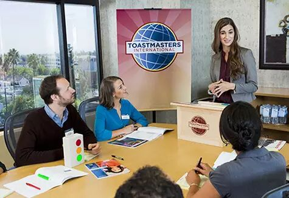
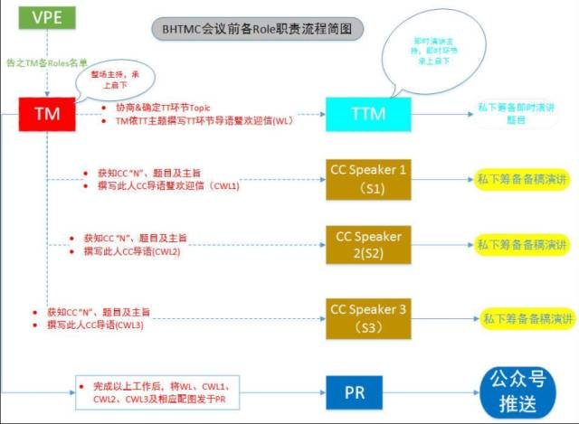
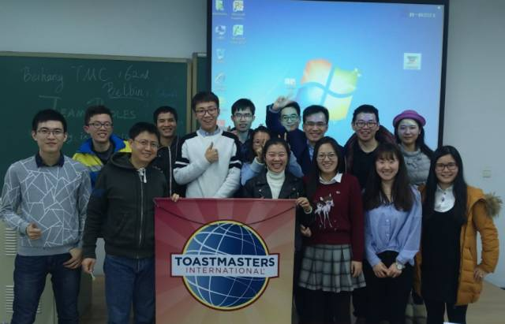

关键词：Toastmaster是干嘛的


Toast 是“举杯祝贺”，Master 是“主人”，所以可将 Toastmaster 解释为“会议主持人”。会议主持人的基本职责是主持整个会议，保证会议顺利进行。
如果你已经可以顺利完成基础职责了，Congratulations！如果觉得不满足于此，我们还有进阶任务给你哦！
那就是创造出关注、期待和认同的气氛，比如：介绍演讲者时总能尽量引发听众的兴趣。
关键词：Toastmaster会议前准备

（1）沟通。认真阅读并熟悉本期会议议程，然后和我们的VPE（每次卖肉的那个）沟通，弄清楚演讲者和角色担任者、当天是否存在特殊活动，如培训分享，新会员介绍，颁奖典礼等。之后再和Table Topic Master(TTM)沟通，确认当期会议的话题。
（2）会议开场词。首先是简要介绍自己，引进主题，适当丰富主题。然后依顺序简要介绍担任角色的各位member的背景或趣事，如工作、家庭、业余爱好、教育、为何选择该演讲话题等。对于自己不熟悉的member可以私下沟通商量自己要如何介绍对方，千万不要错过这个勾搭对方的好机会哦！
（3）过渡用语。准备好会议各环节之间的过度用语，比如Next is XXX；Welcome to XXX；Thank XXX。 并且在过渡环节中，不要忘了和各位角色担当者握手哦！
关键词：Toastmaster会议中的介绍流程
第1步：开场白，简短介绍会议主题，给即席演讲主持人留出发挥的空间，避免介绍内容的重复。
第2步：介绍GE，由GE介绍Timer、Ah-counter、Grammarian，介绍完后舞台交给TM，TM再引出TTM。
第3步：TT环节结束，宣布休息5分钟。
第4步：介绍备稿演讲者，并且请演讲者上台。注意：每次演讲完之后都有一分钟的静默时间，请大家写下对演讲者想说的话及评价。
第5步：介绍Evaluator，并且请Evaluator上台。
第6步：依次介绍Timer、Ah-counter、Grammarian以及GE。
第7步：投票和Quiz time环节。请观众投票选出最佳表现奖（备稿演讲者、即兴演讲者和点评者），收集投票小纸条，进入Quiz Time环节。
关键词：Toastmaster注意的内容有哪些
１、记得从其他人手中“拿走”舞台后，说完要“还回来”。尤其是在Function role在做报告时，agenda上没有写TM的介绍工作，往往TM不要舞台。也不要在舞台或Function Roles之间游走。主持人还是要坚持“有借有还”。
2、主持人要注意Timer的提示，控制好每个环节的时间；
3、在每个环节前后带头鼓掌，幽默的承上启下或者开场来个游戏都会成为加分项；
4、给予即兴演讲主持人一定的协助，例如：提醒上台即席演讲的来宾或会员在白板上写下自己的名字和演讲关键词。
5、介绍演讲者时可选择按照POETS的原则，名字留到最后，当然也可以写出你自己心中认为最佳的串词，可以向我们投稿哦！
POETS指 Project，Objective，Evaluator，Time And Title，Speaker。举例:
首先，第一位演讲的是基础沟通一：Ice Breaker，这位演讲者，将分享他儿时的梦想，在经历过有意的抉择和无意的邂逅，最终选择了深圳这座城市的故事！
在演讲开始前，请允许我介绍他的演讲目标：.......，Evaluator是XX，时间是4～6分钟，演讲题目：......，有请XX！
看了我们的介绍有没有对Toastmaster的职责和工作流程清晰起来呢？欢迎大家来北航头马俱乐部体验一下总主持人哦！
我们的时间是每周五晚19:30-21:30（联合会议除外），地点是北航新主楼某教室，我们和你不见不散哦～

https://mp.weixin.qq.com/s/8bcCZ_lsPQ1Clh1WN_FPvA
本页为抢救式本地归档，图文已永久保存。